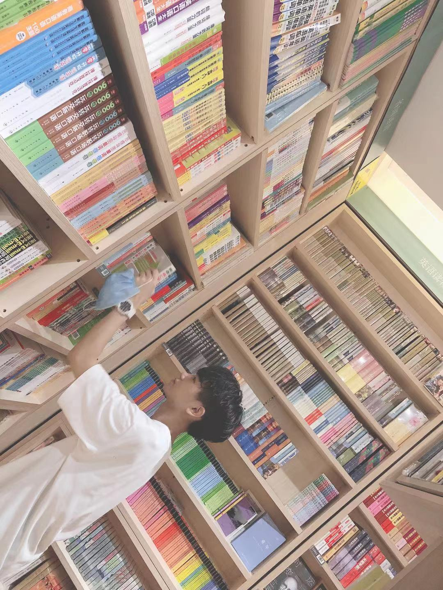

关于我！！！
爱好
喜欢 听歌，慢跑 ，吃饭，睡觉
就是不喜欢学习 hahahaha
当然边听歌边学习也是一件很痛并享受的事啦 （≧0≦）
当然啦！！！
最最最喜欢的事就是边吃泡面边追番啦
比如笔者我创建博客的时候追的就是 来自深渊
太太太好看啦，以至于这个博客的背景就是made in abyss
有没有很喜欢？
图片就丢在这里了（快谢谢我！）
info from me:
我出身与一个小的沿海城市，不知道你们有没有看过一个网剧叫做隐蔽的角落 就在那里（这个还是挺好看的）
高中有幸考上了我们小地方的重点高中（差点没考上）高考凭借着不好不坏的成绩考上了一个普通的211
哈哈！先挂一张我的大学照片吧！！
好看吧，不过是照骗hahaha
说到这里，写这篇博客时，笔者我已经是暨南大学的一个大三老油条了。
好了，挂张我自己的照片吧！
haha不对！放错了，再来：

写到这里:
好巧不巧，我刚好是一名苦逼的计算机学生，对于未来的憧憬嘛…没有hahaha，疫情肆虐，经济动荡，我已经准备好失业了/(ㄒoㄒ)/~~，但是还是得学习不是么，我会在我的博客里更新我的学习笔记，生活，和其他的念念碎。